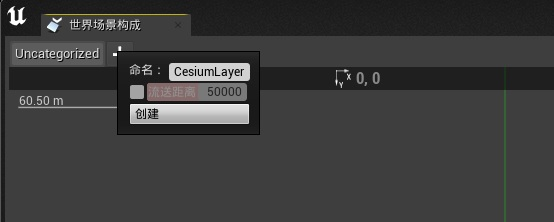
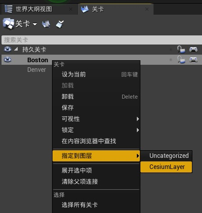

目标
- Create a persistent global level
- Put several local sublevels within the persistent level
- Fill each sublevel with assets and game-logic using your typical Unreal workflow
- Seamlessly fly between sublevels as well as explore the persistent level
- Stay aware of pitfalls along the way
第一步：新建由项目组成的世界场景
-
新建一个空白的项目
参考快速入门，删除【世界大纲试图】中的所有默认的 actors

-
创建持久关卡(Persistent Level)
在内容浏览器新建 World 文件夹，把当前的空关卡命名为 Globe 并保存到此文件夹中。
这个关卡就是 Persistent Level，它代表了整个地球。
-
世界场景设置
打开【世界场景设置】面板，勾选【启用场景合成】
禁用【启用场景边界检查】，在全球尺度的世界中，物体可以移动非常远的距离，禁用此设置 Unreal 就不会删除远离原点的物体

-
打开【关卡设置】面板

-
点击【调用世界场景构成】，打开【世界场景构成】面板

-
在【世界场景构成】面板中新建图层，命名 CesiumLayer，并禁用【流送距离】

第二步：设置持久关卡 Globe
-
添加
Cesium World Terrain With Bing Aerial Imagery地形和影像数据。 -
添加照明
CesiumSunSky，如果看不到影像等数据，去【项目设置】中启用【扩展自动曝光设置中的默认亮度范围】 -
为了建立一些详细的，真实世界的地点并开始构建子关卡，添加
Aerometrex Denver Photogrammetry和Nearmap Boston Photogrammetry的 3D Tilesets 数据。 -
为了绕地球飞行而不迷失方向，添加
DynamicPawn，这个 Actor 在环绕地球飞行时会调整自己的方向，从而能始终保持适当的向上方向。
第三步：设置有地理参考的子关卡
-
将编辑器的世界场景定位到感兴趣的区域，比如
Aerometrex Denver Photogrammetry，然后将编辑器的相机飞行到想要创建子关卡的特定位置，然后将原点放置到这里。 -
然后打开【关卡】面板，创建一个新的 sublevel ，保存到 World 文件夹的 Sublevels 文件夹中


-
在【关卡】面板，双击刚才创建的子关卡，或者右击子关卡，选择【加载】，然后将子关卡指定到创建的 CesiumLayer 图层


-
此时，子关卡被创建，子关卡的中心位置被正确地设置在 CesiumGeoreference actor 上。To georeference the sublevel (i.e., to lock the current alignment of the sublevel with the globe)，勾选【Enabled】
-
现在应该看到一个蓝色的线框球体。球体以子关卡的中心位置为中心(即 georeference )，其半径由数组中子关卡入口的【Load Radius】属性决定。这个球体指定玩家摄像机为了加载关卡必须进入的区域。您可以根据用例的需要自由地扩展或缩小【Load Radius】。
第四步：创建多个子关卡
按 Ctrl + Shift + S 保存当前子关卡和持久关卡的所有内容，或者点击【保存所有】。右键单击【关卡】面板中的【子关卡】并选择【卸载】。

当在 UE 编辑器中工作时，一次只能加载一个 georeferenced 的子关卡。如果具有不同 georeferenced 的多个子关卡同时加载并可见，它们将在编辑器中彼此重叠出现。但是在【运行】的时候没问题。
然后重复第三步创建子关卡的流程
注意：如果想编辑某个子关卡，一定要将其设置为当前